Ты Знаешь
Что Такое Jazz?
Это мягкий свет ночного города,
тихий шёпот саксофона,
ритм, который дышит вместе с тобой.
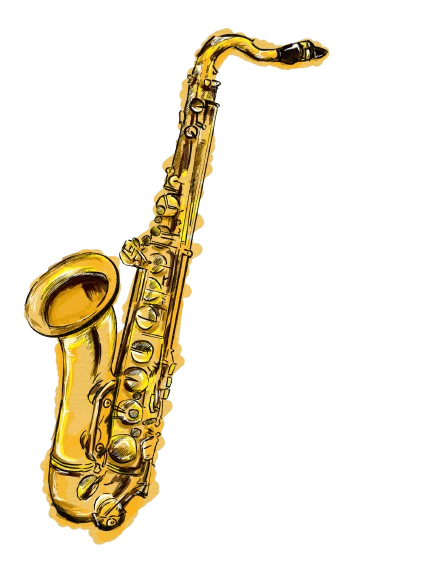
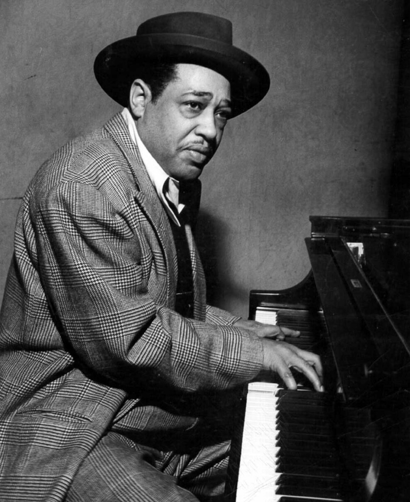
Дьюк Эллингтон
"Это просто музыка"
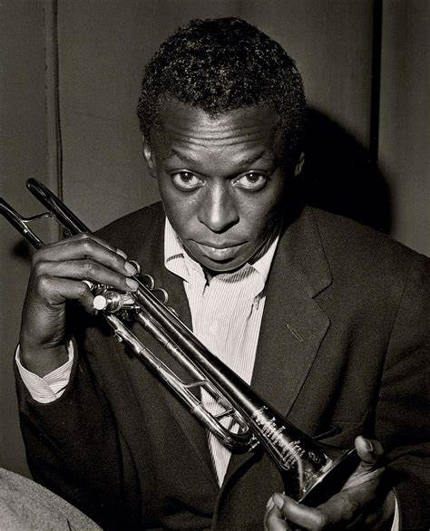
Майлз Дэвис
"Не играй то, что есть"
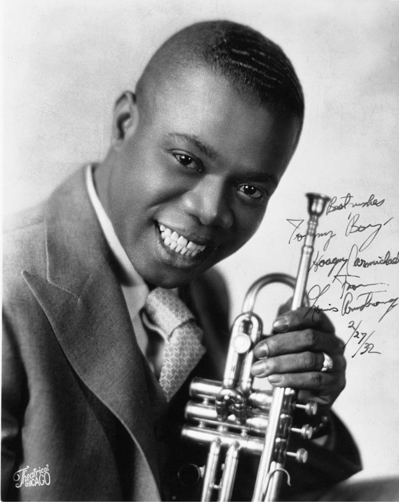
Луи Армстронг
"Джаз — это ты"
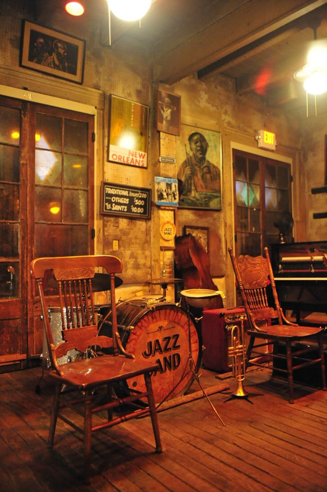
History of Jazz
Джаз появился в XX веке в Новом Орлеане, смешав африканские ритмы, блюз и спиричуэлс. Он развивался через свинг, бибоп и другие стили, а такие музыканты, как Армстронг, Эллингтон и Дэвис, сделали его символом импровизации и свободы. Подробнее

About
Genre
Джаз объединяет множество стилей — от классического свинга и блюза до сложного бибопа и смелого фри-джаза. Узнайте, как они развивались и кто их прославил.
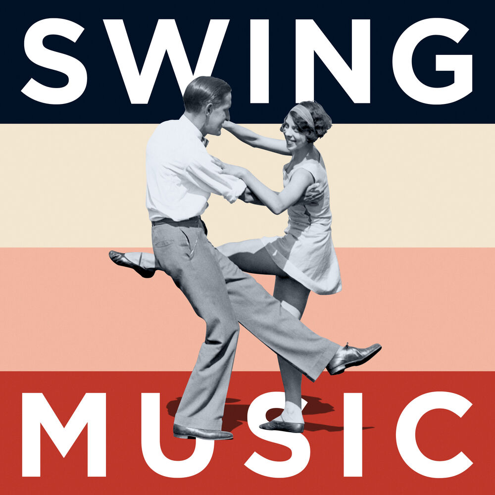
Swing
Свинг – энергичный джаз 30–40-х с биг-бендами, танцевальным ритмом и «качанием» грува.
Послушать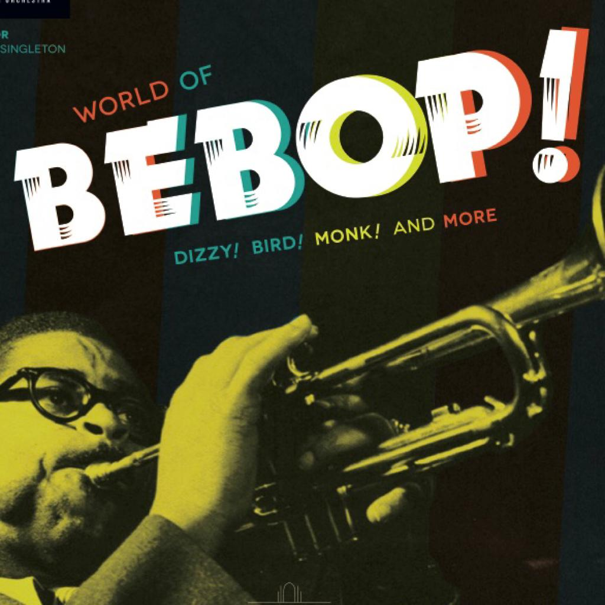
Bebop
Бибоп – стремительный джаз 40-х с импровизациями, и сложными аккордами.
Послушать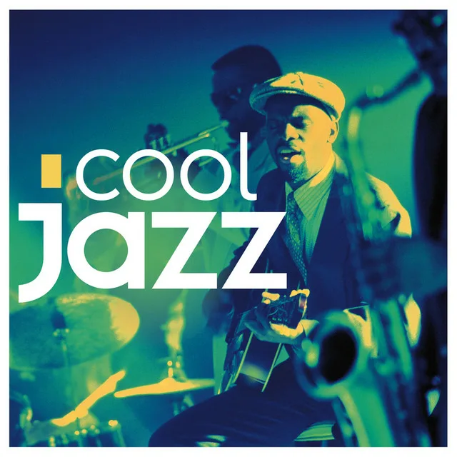
Cool Jazz
Кул-джаз – спокойный джаз 50-х с плавными мелодиями, мягким звучанием и тонкой динамикой.
ПослушатьAbout
Instruments
Джазовые инструменты создают уникальное звучание этого жанра. От саксофона до контрабаса – каждый из них вносит свой вклад в магию импровизации.

Саксофон
Саксофон - из главных инструментов в джазе, придающий музыке яркость и эмоциональность.
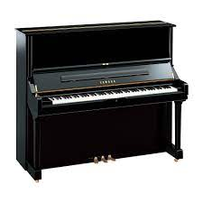
Фортепиано
Фортепиано – ключевой инструмент в джазе, создаёт гармонию, ритм и импровизационные мелодии.

Барабаны
Барабаны – основа ритма в джазе. Они создают пульс, поддерживают импровизацию и добавляют энергию в исполнение.
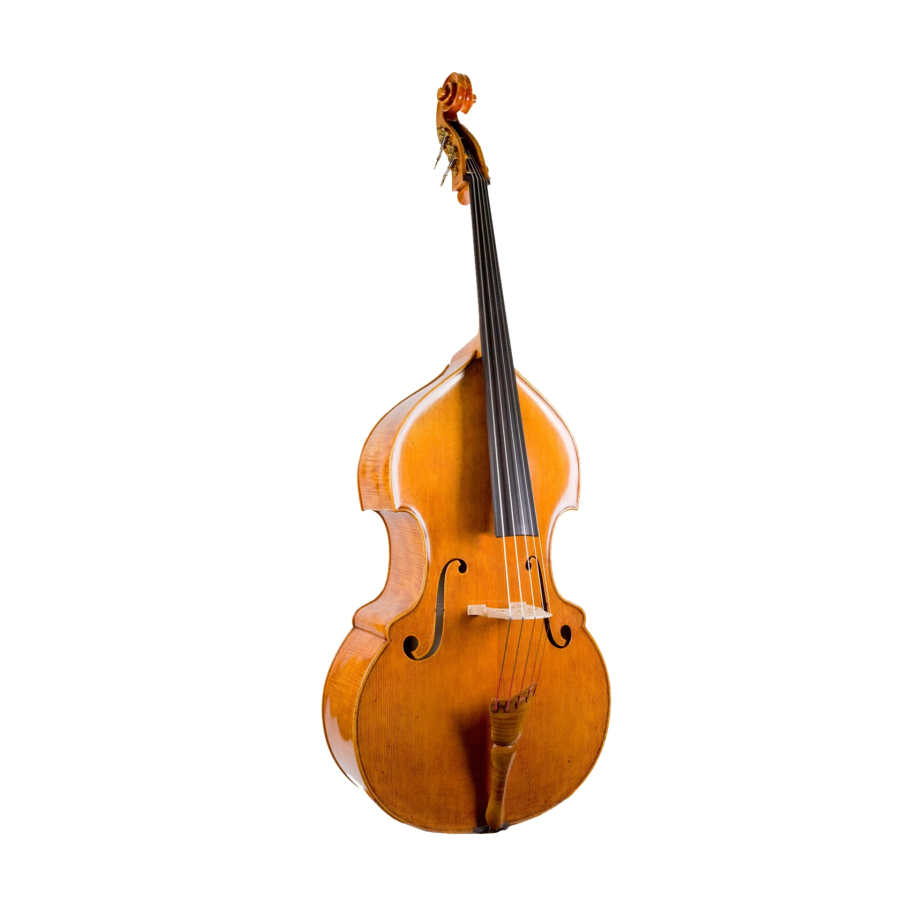
Контрабас
Контрабас – задаёт гармоническую основу и ритмический пульс, поддерживая глубину и баланс в джазовом звучании.

Труба
Труба – яркий и выразительный инструмент, ведущий мелодию и добавляющий мощные акценты в джазовом звучании.
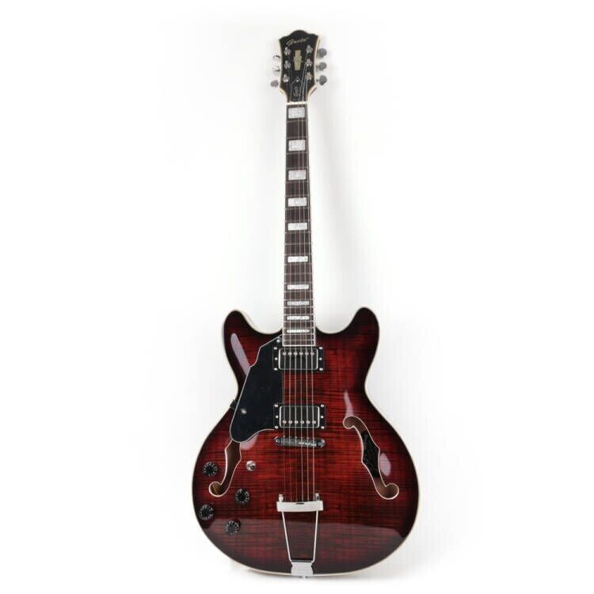
Гитара
Гитара – используется как ритмический и солирующий инструмент, добавляя джазу мягкость или энергичные аккорды.
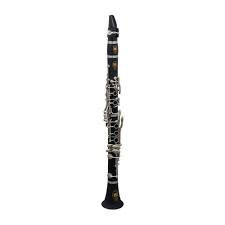
Кларнет
Кларнет – придает мелодиям теплый и выразительный звук, особенно в традиционном джазе и свинге.
Souls Of Jazz
Легенды джаза – это мастера, которые сформировали жанр. Их музыка, стиль и новаторство сделали джаз вечным искусством, вдохновляя поколения.
LOUIS ARMSTRONG
Вообще один из отцов джаза, труба, вокал, харизма, влияние на всё поколение музыкантов и не только. Подробнее
DUKE ELLINGTON
Король аранжировок и биг-бендов, сделал джаз по-настоящему оркестровым искусством. Подробнее
MILES DAVIS
Новатор и экспериментатор, перезапускал джаз несколько раз, от кул-джаза до электрического фьюжна. Подробнее
CHARLIE PARKER
Отец бибопа, превратил джаз в виртуозное и скоростное искусство с глубокими импровизациями. Подробнее
My Contacts
Этот сайт - моя небольшая дань великому джазу. Если хотите обсудить что-то или поделится своими идеями - пишите, не стесняйтесь.
+7-705-550-82-05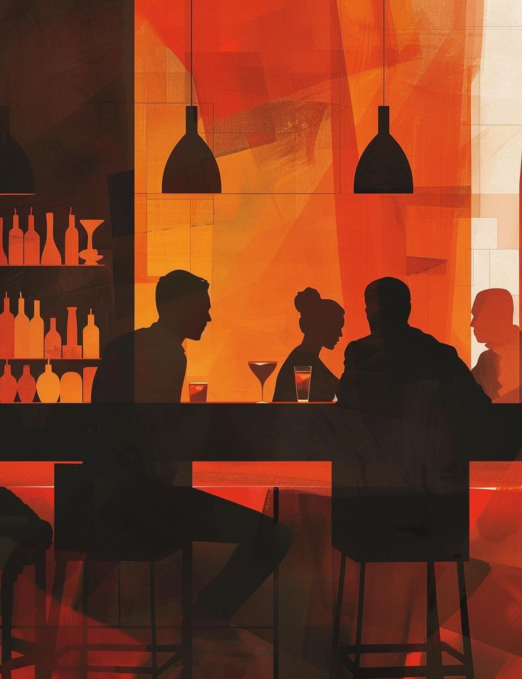
Jazz
Survey
Поделитесь своим мнением о джазе! Ответьте на наши вопросы, чтобы рассказать, что вы любите в этом жанре, и помогите нам узнать больше о вкусах поклонников джаза.
Спасибо за участие!
Ваши ответы помогут нам лучше понять, что вы любите в джазе. Продолжайте наслаждаться музыкой!